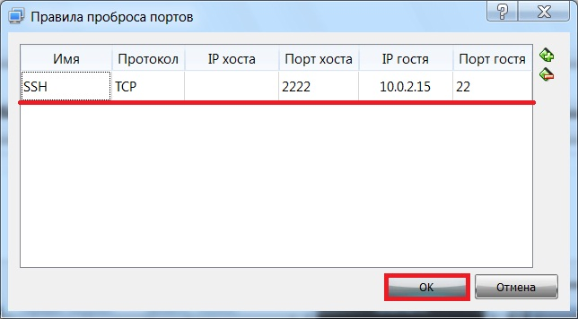

В данной статье мы с Вами рассмотрим возможность программы VirtualBox пробрасывать порты в гостевую операционную систему, для того чтобы иметь доступ к ней с хоста, т.е. с реальной машины, например, в тех случаях, когда подключение (сеть) в гостевой ОС в VirtualBox работает в режиме «NAT».
Данная возможность будет полезна, например, когда Вам нужен одновременно и доступ к Интернету в гостевой операционной системе, и доступ к каким-нибудь сервисам в гостевой ОС с хоста.
Доступ к Интернету в гостевой ОС можно получить с помощью выбора типа подключения «NAT», но как Вы, наверное, знаете, при этом теряется доступ к сервисам гостевой ОС с реального Вашего компьютера. Данную проблему как раз и решает проброс портов.
Рассматривать проброс портов мы будем на примере случая, когда Вы создали виртуальную машину в VirtualBox и установили в нее серверную операционную систему, например Linux Ubuntu Server, при этом Вы настроили сеть в режиме NAT для доступа в Интернет, но доступа к гостевой операционной системе (Ubuntu Server) у Вас нет. Например, Вы не можете подключиться к ней по SSH со своего компьютера, или обратиться к Web серверу, или даже просто скопировать команду и вставить в консоль. Поэтому давайте пробросим порт в гостевую ОС, например, для того чтобы подключится к ней по SSH всем известной программой PuTTY. С помощью нее мы сможем без проблем управлять сервером и в случае необходимости копировать команды в нее.
Для сведения.
PuTTY – это бесплатная клиентская программа для удаленного подключения, например к серверам по протоколам SSH, Telnet и другим. Она позволяет управлять удаленным компьютером. PuTTY — это клиентская часть, серверная должна быть реализована на удаленной стороне, например, в нашем случае в Ubuntu Server должен быть установлен SSH сервер. Скачать PuTTY можно с официального сайта — www.putty.org.
Содержание
Настройка проброса портов в VirtualBox для SSH
SSH – сервер обычно прослушивает 22 порт, поэтому нам необходимо пробросить подключение именно на 22 порт.
Для того чтобы пробросить порт, запускаем VirtualBox и заходим в настройки нашей виртуальной машины с Ubuntu Server. Например, выбираем нужную машину и нажимаем кнопку «Настроить», данный пункт также доступен, если нажать правой кнопкой мыши по выбранной виртуальной машине.
Затем переходим в раздел настроек «Сеть», и открываем вкладку с включенным адаптером. Тип подключения, как Вы помните, «NAT» — для доступа в Интернет.
Подробнее
Реклама
Далее щелкаем на пункт «Дополнительно», чтобы отобразить дополнительные настройки данного адаптера, и после этого нажимаем на кнопку «Проброс портов».
В итоге у нас откроется окно «Правила проброса портов». Для добавления нового правила нажимаем на иконку с плюсиком.
На данном этапе Вы уже должны знать IP адрес гостевой операционной системы и порт, который прослушивает SSH сервер (по умолчанию это 22 порт). В Ubuntu Server IP адрес можно узнать с помощью команды ifconfig (по умолчанию это 10.2.0.15).
Описание колонок таблицы с правилами:
После заполнения таблицы с правилом, нажимаем «ОК».

На этом настройка проброса портов закончена, теперь мы можем проверить работу данного правила (проброса). Для этого сначала запускаем виртуальную машину с Ubuntu Server, а затем программу PuTTY. На вкладке Session выбираем тип соединения SSH и в поле Host Name пишем локальный адрес компьютера (хоста), которой мы указывали в колонке «IP хоста» в правилах проброса портов, если ничего не указывали, то пишите 127.0.0.1. В поле порт указываем номер порта, который мы указывали в колонке «Порт хоста», т.е. 2222. Нажимаем кнопку «Open».
Если после этого Вы получили приглашение на ввод логина, то это значит, что подключение работает, и Вы, соответственно, можете вводить учетные данные от гостевой операционной системы.
У меня на этом все, надеюсь, материал был Вам полезен, пока!
Нравится29Не нравится1